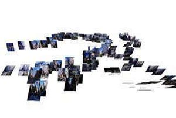

4D Fabrication & Morphological Computation Design Lab
(Hiroya Tanaka Lab, Phase III)
3Dプリンタやレーザーカッターといった、既に普及している「デジタルファブリケーション技術」に、材料の自己修復・自己変形性、物理化学現象に基づく滑らかな動き、環境に応答する状態遷移、四季折々に随伴する変色、生体親和性、身体に適合する柔らかなフィッティング機能など、新しい「4D（時間軸）」的要素を加えるための新技術と、そのデザイン応用を開拓する研究室です。この目標の達成のため、研究室では「異素材複合化・構造化プリンティングシミュレーション」と「かたちのビッグデータ処理技術」という２つのコア技術を磨いています。研究室に集うエンジニアは独自のコア技術を磨き上げ、また研究室に集うデザイナはそれらの技術を組み合わせて、医療・看護・建築・都市・ロボット・HCIなどの各分野における具体的で魅力的な応用例を社会実装します。エンジニアとデザイナがともに活動するなかから、これまでにはなかった視点が芽生え、創造性が花開く、小さなデザインエンジニアリングスタジオとしての顔も持っています。

Creativity Support Tools



Featured Projects (2005 -)